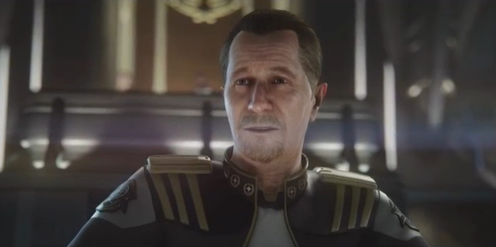

Star Citizen Gary Oldman
Lore
Squadron 42 is the legendary volunteer fighter squadron of the UEE Military. They fought in many important battles over the ages. Currently, the flagsip of Squadron 42 is the Bengal-Class Paul Steed(CV023).
Events
The campain of Squadron 42 will take place just after the Vanduul attack on the UEE systems of Caliban, Orion and Tiber.
The Squadron 42 singleplayer will feature:
- 28 chapters equivalent to 60+ missions
- A-list cast to match any event movie
- 340 speaking roles with state of the art facial scanning and mocap
- Over 20 hours of performance capture
- Story arc with 1255 pages of dialogue
- 40 distinct ships from fighters to dreadnoughts
- Hand-crafted environments enhanced with procedural tech
- Systemic space and FPS gameplay - from stealth to brute force
- Dogfighting in both space and planetary atmosphere
- Subsumption AI - fully systemic, 24-hr schedules, 1000+ subroutines, simultaneous secondary objectives